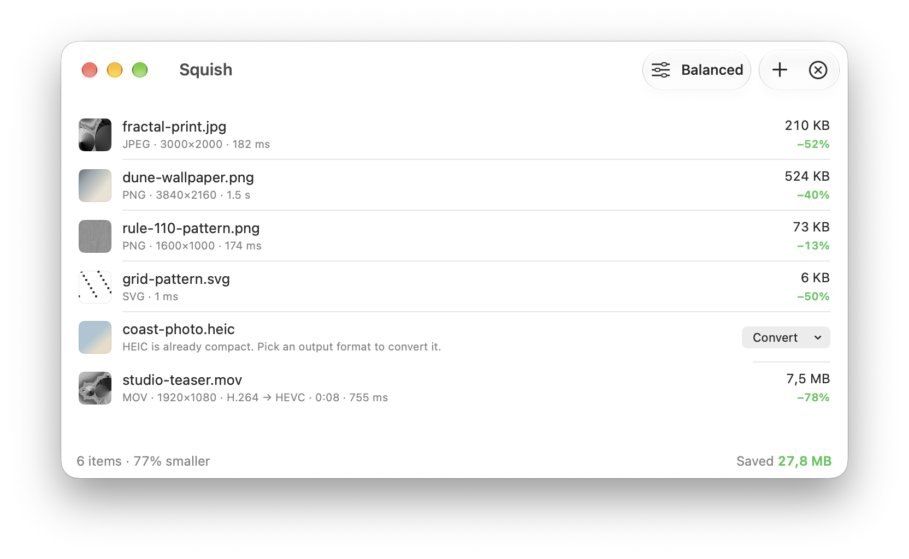

Free for Mac · Open source
Squish shrinks images and videos with the best encoders available. Drop files in, get them back up to 90% lighter.
macOS 26 or later · Apple Silicon · Notarized by Apple · 9 MB

Measured on an M4 Pro with the default Balanced preset
Dragging files somewhere? Give the pointer a quick shake and a drop shelf appears under it, in any app. Drop, wait a moment, then drag the smaller files straight back out.
It feels like it came with your Mac, and it's careful with your files.
MOV and MP4 are re-encoded to HEVC on Apple's hardware encoder. Resolution, rotation, HDR and audio are kept.
Originals go to the Trash, so Restore is one click away. Finder tags and dates are preserved.
If Squish can't make a file smaller, it leaves the original exactly as it was.
The Lossless preset shrinks PNG and JPEG files without changing a single pixel.
Turn HEIC, TIFF, PNG or JPEG into WebP, AVIF or JPEG. Compare before and after with a slider.
Pick a maximum size like 2560 px and larger images and videos are scaled down as they're optimized.
Turn animated GIFs into animated WebP or MP4 video, usually 80–95% smaller, with every frame's timing kept.
Keep PNGs lossless, turn HEIC into JPEG and GIFs into MP4, each with its own preset.
No accounts, no uploads, no analytics. A native SwiftUI app with a Rust engine.
Set it up once and Squish keeps your files small without a single drag.
New screenshots and exports saved to a folder are optimized the moment they land.
Press ⌃⌥⌘V to shrink a copied screenshot before you paste it into Slack, GitHub or Mail.
“Optimize Files” and “Optimize Clipboard Image” actions for Shortcuts, Spotlight and Siri.
The same engine as squish in Terminal, for build scripts and CI. Install it from Settings → Automation.
$ squish -i img/ ✓ img/card.jpg 90 KB → 30 KB 66.9% smaller ✓ img/app.png 423 KB → 68 KB 84.0% smaller ✓ img/icon.png 653 KB → 356 KB 45.5% smaller 3 files · Saved 712 KB (61.1% smaller) · 0 failed
Squish picks the strongest open-source codec for every file type and tunes it for you.
| PNG | libimagequant palette quantization, then oxipng's lossless compression search |
| JPEG | mozjpeg re-encode, or a lossless transcode, whichever is smaller |
| WebP | libwebp with sharp YUV |
| AVIF | rav1e AV1 encoder |
| SVG | OXVG, a Rust port of SVGO |
| GIF | Animated WebP with libwebp, or H.264 MP4 on Apple's hardware encoder |
| Video | HEVC on Apple's hardware encoder; HDR stays 10-bit |
| Resize | Lanczos3 with SIMD via fast_image_resize |
Squish is free software under the GPL-3.0. Read the code, report an issue, or build it yourself with Xcode 26 and Rust.
git clone https://github.com/vunguyentuan/squish cd squish make run
Free. In English, Tiếng Việt, 日本語, 简体中文, Español, Français and Deutsch. Requires macOS 26 or later on Apple Silicon.
Download for Mac